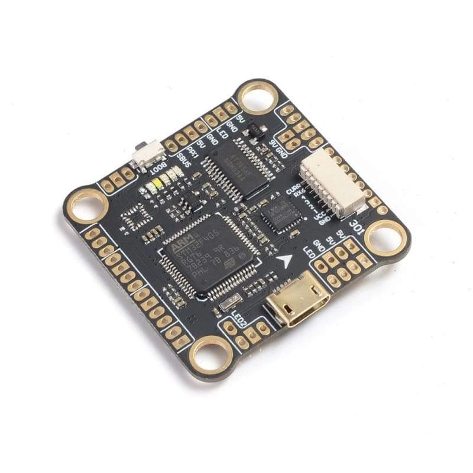

Mamba F405 MK2 Flight Controller¶
{kind=link}
The Mamba F405 MK2 is an autopilot produced by Diatone.
Warning
This autopilot does not have a barometer. An external barometer can be added, or operation with an alternate altitude sensor, such as GPS for outdoor use or rangefinder for indoor applications is supported, with caveats. In Plane, if GPS is lost, then the user should switch to a non-navigation, non-altitude holding mode immediately. In Copter, operation is allowed using GPS, but not recommended, due to the imprecision in altitude hold modes. Bear in mind if GPS fails and the vehicle is using it for altitude information, a crash can eventually result due to lack of accurate altitude information.See Using GPS for Altitude Sensing for more information.
Features¶
STM32F405RGT6 microcontroller
MPU6000 IMU
AT7456E OSD
4 UARTs
4 PWM outputs
Where to buy¶
Available from multiple retailers and directly from the vendor at diatone.us
Pinout¶
{kind=link}
Mamba F405 MK2 Board¶
UART Mapping¶
Name |
Pin labels |
Function |
|---|---|---|
SERIAL0 |
USB |
|
SERIAL1 |
PPM / SBUS |
RC Input (SBUS pin MUST be used for RC input) |
SERIAL3 |
TX3 / RX3 |
UART3 (Telem1) |
SERIAL6 |
TX6 / RX6 |
UART6 (GPS) |
BRD_ALT_CONFIG |
PPM pin function |
|---|---|
ALT 0 (default) |
tied internally to an inverter, cannot be driven from the outside |
ALT 1 |
RX1/TX1 (NOTE: this feature is untested and unproven!) |
RC Input¶
RC input is configured on the SBUS pin which drives the UART1 RX pin via an inverter. It supports all RC unidirectional protocols (ie Not FPORT or other bidirectional protocols with telemetry)
OSD Support¶
The Mamba F405 MK2 has an integrated OSD.
PWM Output¶
The Mamba F405 MK2 supports up to 4 PWM outputs. The pads for motor output ESC1 to ESC4 on the above diagram are for the 4 outputs. All 4 outputs support Bi-Directional DShot as well as all PWM types.
All the output channels are in the same group.
Channels within the same group need to use the same output rate and protocol. If any channel in a group uses DShot then all channels in the group need to use DShot.
Battery Monitoring¶
The board has a built-in voltage sensor. The voltage sensor can handle up to 6S LiPo batteries. An external current sensor input is also provided on the ESC connector.
The correct battery setting parameters are:
BATT_MONITOR = 3
BATT_VOLT_PIN = 11
BATT_VOLT_MULT ~ 12.0
BATT_CURR_PIN = 13
BATT_AMP_PERVLT ~ 39 with the Diattone 40A ESC sometimes bundled with the autopilot.
Compass¶
The Mamba F405 MK2 does not have a built-in compass, but you can attach an external compass using I2C on the SDA and SCL pads.
Flashing Firmware¶
Usually these boards are sold pre-flashed with betaflight / INav firwares and require both firmware and bootloader to be updated if you want to use ArduPilot, as an ArduPilot-compatible bootloader is required for subsequent ArduPilot firmware-upgrade handling.
See Loading Firmware onto boards without existing ArduPilot firmware
[copywiki destination=”plane,copter,rover,blimp”]